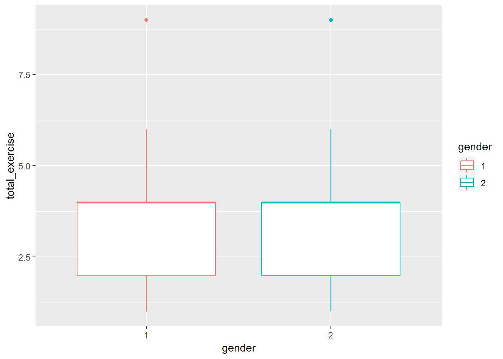
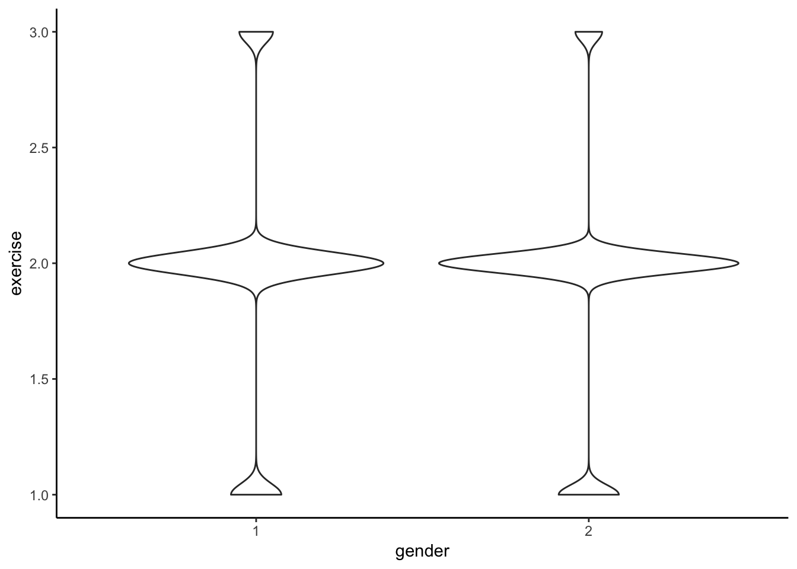
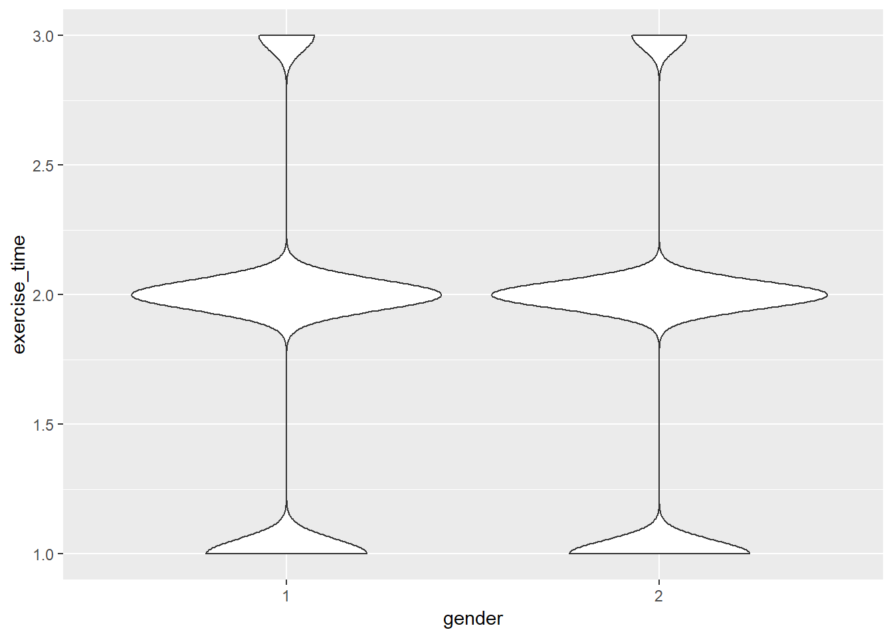
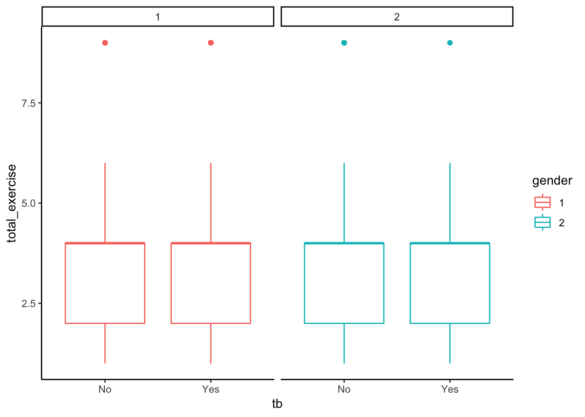

exercise
Rui Huang
November 14, 2018
Cleaning data and rename variables
load('./dm.Rdata')
df_raw = dm_base %>%
rename(subject_id = JiBenCID,
weight = tizhong,
height = ShenGao,
exercise_time = xiuxiansj) %>%
mutate(gender = ifelse(xingbie == 1, "Male", "Female"),
tb = ifelse(censer == 1, "No", "Yes"),
exercise = as.factor(xiuxiantl)) %>%
select(-xingbie, -censer, -xiuxiantl) %>%
janitor::clean_names()
levels(df_raw$exercise) <- list("Mild" = 1, "Medium" = 2,'heavy'=c(3,4))Combine data
df_combine = dm_base %>%
rename(
subject_id = JiBenCID,
glu_average = fastglu,
weight_initial = tizhong_1st,
weight_average = tizhong,
height = ShenGao,
glu_initial = kfxt_1st,
gender = xingbie,
district = GuanLiQX,
sys_pressure = Sbp,
dia_pressure = Dbp,
exercise_time = xiuxiansj,
exercise = xiuxiantl,
drug_insulin = insulin,
drug_oral_sulfo = sulfonylurea,
drug_oral_biguanide = biguanide,
drug_oral_glu = glu_inhib,
retina = reti,
skin = derm,
vessel = vesl,
nerve = neur,
kidney = neph,
depression = depress,
dmtime = quezhensj,
birthyear = birth_year,
birthmon = birth_mon,
dmdatayear = rucu_year,
dmdatamon = rucu_mon,
dmdataage = rucuage) %>%
mutate(
bmi_initial = weight_initial/(height/100)^2,
bmi_average = weight_average/(height/100)^2,
bmi_change = bmi_average - bmi_initial,
glu_change = glu_average - glu_initial,
tb = ifelse(censer == 1, "No", "Yes"),
exercise = as.factor(exercise),
drug_oral = case_when(drug_oral_biguanide == 0 & drug_oral_biguanide == 0 & drug_oral_glu == 0 ~0, TRUE ~ 1),
drug = case_when(drug_oral == 0 & drug_insulin ==0 ~ 0,TRUE ~ 1),
retina = as.numeric(retina),
skin = as.numeric(skin),
vessel = as.numeric(vessel),
nerve = as.numeric(nerve),
kidney = as.numeric(kidney),
complications = retina + skin + vessel + nerve + kidney + depression,
complications = as.factor(complications)
)
levels(df_combine$complications) <- list(none=0,one=1,more_than_two=c(2,6))
levels(df_combine$exercise) <- list('1' = 1, '2' = 2, '3' = c(3,4))Compare male and female mean for exercise by t.test
male_exercise = df_combine %>%
filter(gender == 1) %>%
mutate(exercise = as.numeric(exercise))
female_exercise = df_combine %>%
filter(gender == 2) %>%
mutate(exercise = as.numeric(exercise))
var.test(male_exercise$exercise,female_exercise$exercise, alternative = "two.sided")##
## F test to compare two variances
##
## data: male_exercise$exercise and female_exercise$exercise
## F = 1.1286, num df = 69985, denom df = 100410, p-value < 2.2e-16
## alternative hypothesis: true ratio of variances is not equal to 1
## 95 percent confidence interval:
## 1.113299 1.144108
## sample estimates:
## ratio of variances
## 1.128589t.test(male_exercise$exercise,female_exercise$exercise, var.equal=FALSE, paired=FALSE) ##
## Welch Two Sample t-test
##
## data: male_exercise$exercise and female_exercise$exercise
## t = 15.613, df = 144660, p-value < 2.2e-16
## alternative hypothesis: true difference in means is not equal to 0
## 95 percent confidence interval:
## 0.03253039 0.04187009
## sample estimates:
## mean of x mean of y
## 1.950747 1.913547Compare male and female mean for exercise_time by t.test
var.test(male_exercise$exercise_time,female_exercise$exercise_time, alternative = "two.sided")##
## F test to compare two variances
##
## data: male_exercise$exercise_time and female_exercise$exercise_time
## F = 1.0195, num df = 69985, denom df = 100410, p-value = 0.005619
## alternative hypothesis: true ratio of variances is not equal to 1
## 95 percent confidence interval:
## 1.005646 1.033476
## sample estimates:
## ratio of variances
## 1.019458t.test(male_exercise$exercise_time,female_exercise$exercise_time, var.equal=FALSE, paired=FALSE) ##
## Welch Two Sample t-test
##
## data: male_exercise$exercise_time and female_exercise$exercise_time
## t = 6.8304, df = 149640, p-value = 8.503e-12
## alternative hypothesis: true difference in means is not equal to 0
## 95 percent confidence interval:
## 0.01453694 0.02623712
## sample estimates:
## mean of x mean of y
## 1.799360 1.778973Compare male and female mean for exercise_time*exercise by t.test
male_exercise = male_exercise %>% mutate(total_exercise = exercise * exercise_time)
female_exercise = female_exercise %>% mutate(total_exercise = exercise * exercise_time)
var.test(male_exercise$total_exercise,female_exercise$total_exercise, alternative = "two.sided")##
## F test to compare two variances
##
## data: male_exercise$total_exercise and female_exercise$total_exercise
## F = 1.1381, num df = 69985, denom df = 100410, p-value < 2.2e-16
## alternative hypothesis: true ratio of variances is not equal to 1
## 95 percent confidence interval:
## 1.122712 1.153782
## sample estimates:
## ratio of variances
## 1.138131t.test(male_exercise$total_exercise,female_exercise$total_exercise, var.equal=FALSE, paired=FALSE) ##
## Welch Two Sample t-test
##
## data: male_exercise$total_exercise and female_exercise$total_exercise
## t = 13.445, df = 144240, p-value < 2.2e-16
## alternative hypothesis: true difference in means is not equal to 0
## 95 percent confidence interval:
## 0.1001726 0.1343634
## sample estimates:
## mean of x mean of y
## 3.655774 3.538506Make exercise distribution plot
df_combine %>%
mutate(exercise = as.numeric(exercise),
total_exercise = exercise * exercise_time,
gender = as.factor(gender)) %>%
ggplot(aes(x = total_exercise, color = gender)) +
geom_density()
df_combine %>%
mutate(exercise = as.numeric(exercise),
total_exercise = exercise * exercise_time,
gender = as.factor(gender)) %>%
ggplot(aes(x = gender, y = total_exercise, color = gender)) +
geom_boxplot()
df_combine %>%
mutate(exercise = as.numeric(exercise),
gender = as.factor(gender)) %>%
ggplot(aes( x = gender, y = exercise)) +
geom_violin()
df_combine %>%
mutate(gender = as.factor(gender)) %>%
ggplot(aes( x = gender, y = exercise_time)) +
geom_violin()
Make tb vs exercise plot
df_combine %>%
mutate(exercise = as.numeric(exercise),
total_exercise = exercise * exercise_time,
gender = as.factor(gender)) %>%
ggplot(aes(x = tb, y = total_exercise, color = gender)) +
geom_boxplot() +
facet_grid(.~gender)